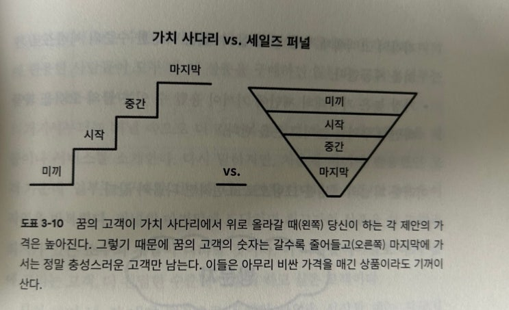
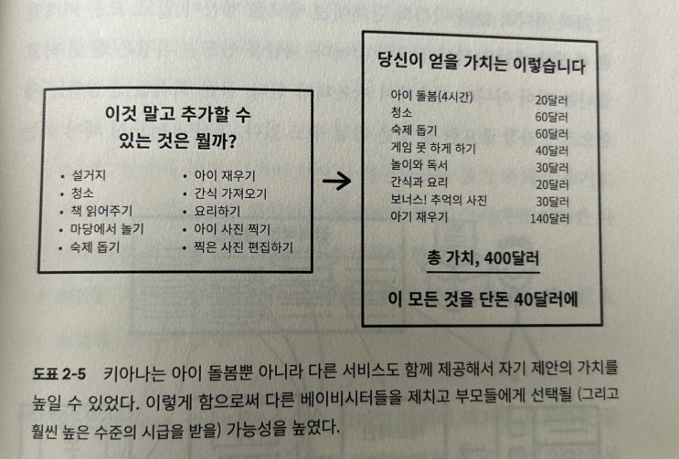
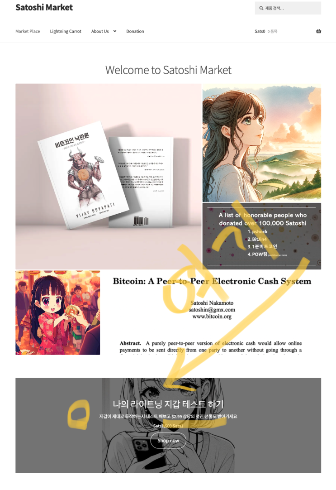
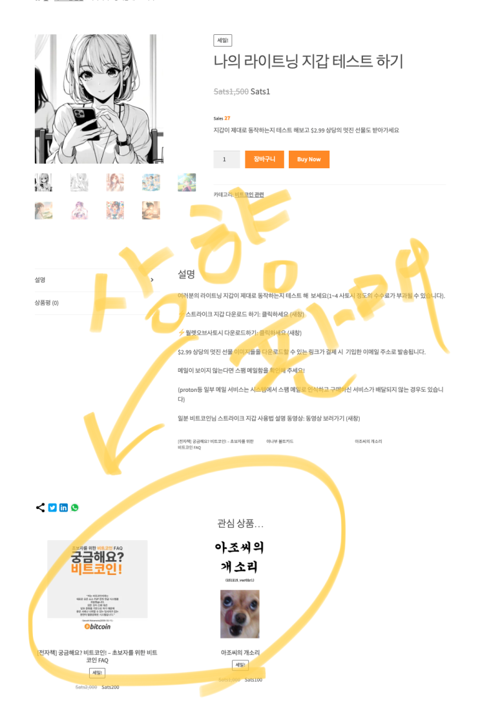
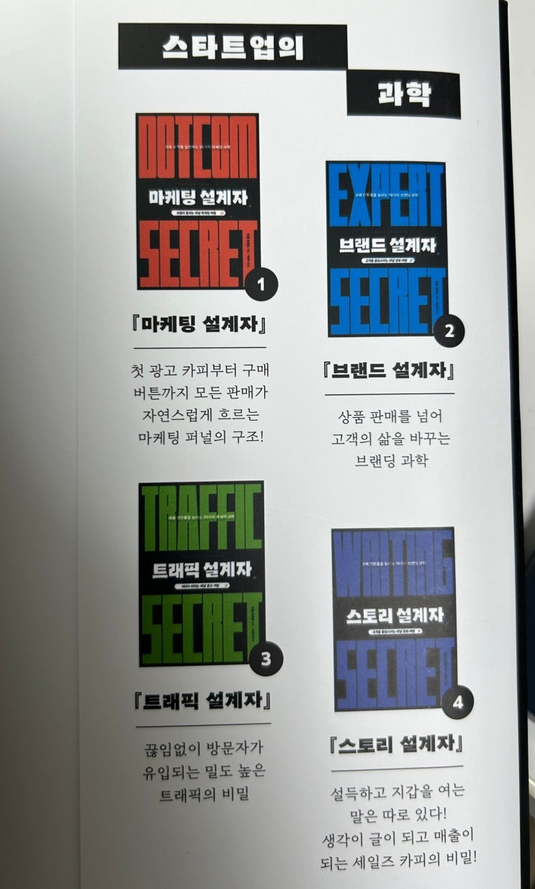

![[서평] 마케팅 설계자 이미지 1](../../assets/images/note-39/p227-01.jpg)
인터넷 웹사이트 수익화에 관심이 많은 친한 친구가 추천해줘서 읽은 책입니다. 분량이 좀 많고 좀 생소한 부분이라서 다읽는데 시간이 꽤 걸렸네요.
내용은 최근 몇 년사이에 인터넷 페이크 구루들이 많이 써서 말이 많았던 깔때기 마케팅이라고 퍼널 마케팅집에 대한 내용입니다. 이 책은 순수하게 판매관련 내용만 나와 있는데 퍼널 마케팅에 대한 정의는 아래와 같습니다.
퍼널 마케팅(Funnel Marketing)은 고객의 구매 여정을 단계별로 나누어 마케팅 활동을 최적화하는 전략을 말합니다. 이개념은 고객의 구매 과정을 '퍼널(깔때기)' 형태로 비유하여 설명하곤합니다. 퍼널의 꼭대기부터 시작해 바닥으로 갈수록 고객 수가 줄어드는 형태를 띠며, 각 단계에서 고객을 다음 단계로 유도하기 위한 특정 마케팅 전략이 사용됩니다.
퍼널 마케팅의 주요 단계 1.
인지 단계 (Awareness): 이 단계에서는 잠재 고객들이 제품이나 서비스의 존재를 알게됩니다. 광고, 이벤트, 소셜미디어 캠페인 등을 통해 브랜드 인지도를 높입니다.
2.
관심 단계 (Interest): 고객이 제품에 대해 관심을 갖기 시작합니다. 이메일 마케팅, 블로그, 전문적인 콘텐츠를 제공하여 제품의 매력을 강조할 수 있습니다.
3.
결정 단계 (Decision): 고객이 구매 결정을 내리는 단계입니다. 할인, 프로모션, 무료 시험 사용 등을 제공하여 구매를 유도할 수 있습니다.
4.
행동 단계 (Action): 고객이 실제로 구매를 진행합니다. 이 단계에서는 구매 과정을 간소화하고 고객 지원을 강화 하여 구매 결정을 촉진합니다.
5.
충성 단계 (Loyalty): 고객이 반복 구매를 하거나 브랜드를 추천할 수 있도록 만드는 단계입니다. 지속적인 고객 관리와 보상 프로그램을 통해 고객의 충성도를 높입니다.
퍼널 마케팅은 각 단계에서 고객의 행동과 반응을 분석하여 마케팅 전략을 지속적으로 개선하고, 이를 통해 더 많은 전환을 이끌어 내는 데 목적이 있습니다. 이러한 접근 방식은 고객의 요구와 행동을 보다 정밀하게 이해하고, 효율적인 마케팅 자원 배분을 가능하게합니다.
출처 : chatGPT

정말 충성스러운 고객만 남기는 장점으로 인해 인터넷 시대 페이크 그루의 효과적인 도구가 된 퍼널 마케팅 (광신자들은 돈이 된다) 저는 페이크 구루가 될 생각은 없기 때문에 ㅋㅋㅋ
이걸 배워서 사토시 마켓에서 뭐라도 좀 더 팔 수 있을까 하는 마음가짐으로 책을 읽었고 책을 통해 모르던 몇 가지 재미있는 마케팅 기법들도 배우며 이를 적용해 사토시 마켓을 업데이트 하기도 하였습니다.

가격보다 더 많은 가치를 제공한다는 것을 제시해서 구매를 끌어올리는 내용 예를 들면 아래 비트코인으로 첫 결제하기 제품과 연관된 상향 판매 제품들은 이 책을 통해서 배운 '가치사다리'기법과 '더 많은 가치 제공하기' 기법을 이용해본 것입니다.

처음 웹사이트를 방문하는 사람들은 라이트닝 지갑을 테스트 해보고 싶어할 것이라고 판단해서 지갑을 테스트 해보면 선물도 무료로 주는 제품을 만들었다 (선물은 3달러어치이지만 제품은 1원)

여기에 들어가면 방문자가 원하던 결제를 해볼 수 있고, 결제를 해보면서 아래 조금 더 비싼 상향판매 제품 (조금 더 비싼 제품 100원 200원 ㅋㅋ)이 제시된다. 상향판매까지 이루어지면 방문자는 이제 라이트닝 결제에 익숙한 사람이 되고 이제 좀 더 비싼 제품(책 등)이 이들에게 제시되게 만들었다.
책 자체는 제가 잘 모르던 마케팅 부분이라서 이것 저것 신기한것은 많았는데 책이 후반에 갈 수록 본인 웹사이트 홍보하는 내용이 많아서 좀 불편했습니다. 내가 돈 주고 너 광고를 산건 아닌데, 여기서도 가치 사다리 방식으로 물건을 팔려고 시도하는 저자의 끈질김게 경의를 표합니다. 나중에는 읽다 짜증날 정도입니다. ㅎㅎ
책 자체는 이 분야를 모르는 분들께 기초 개념과 응용이 어떻게 되는지 보는데 도움이 될 듯합니다. 제가 마케팅 고수가 아니라서 평하기는 어려운 것 같고 다음 시리즈들에 대해서는 저는 가능한 중고서적이나 빌려보는 형태로 볼까 생각중입니다.

제 분야가 아니라서 흥미롭게 읽었지만 끊임 없는 자기 책 및 프로그램의 광고가 좀 불편했던 책입니다.
끝.